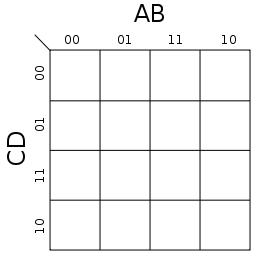
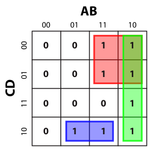
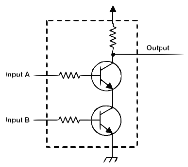

Table of Contents
Boolean Algebra Basics
In mathematics and mathematical logic, Boolean algebra is the subarea of algebra in which the values of the variables are the truth values true and false, usually denoted 1 and 0 respectively. Instead of elementary algebra where the values of the variables are numbers, and the main operations are addition and multiplication, the main operations of Boolean algebra are the conjunction AND, denoted ., the disjunction OR, denoted +, and the negation not, denoted ‾.
To demonstrate the behaviour of Boolean functions (operations of Boolean algebra), we can construct truth tables: tables that show the results of applying the logical function to all possible combinations of inputs. They are typically structured as:
| A | B | Q |
|---|---|---|
| 0 (Value of A) | 0 (Value of B) | 0 (Output of boolean function) |
| 0 (Value of A) | 1 (Value of B) | 1 (Output of boolean function) |
| 1 (Value of A) | 0 (Value of B) | 1 (Output of boolean function) |
| 1 (Value of A) | 1 (Value of B) | 1 (Output of boolean function) |
The main boolean functions that you will come accross are described below:
OR/+ function
If X and Y are Boolean variables, A OR B is written as A + B. If A + B = Q, Q is true if either A, B or both are true and false otherwise.
Truth table for OR:| A | B | Q |
|---|---|---|
| 0 | 0 | 0 |
| 0 | 1 | 1 |
| 1 | 0 | 1 |
| 1 | 1 | 1 |
AND/. function
If A and B are Boolean variables, A AND B is written as A.B. If A.B = Q, Q is true if both A and B are true and false otherwise. AND has greater precedense than OR.
Truth table for AND:| A | B | Q |
|---|---|---|
| 0 | 0 | 0 |
| 0 | 1 | 0 |
| 1 | 0 | 0 |
| 1 | 1 | 1 |
NOT/‾ function
If A is a Boolean variable, NOT A is written as
| A | Q |
|---|---|
| 0 | 1 |
| 1 | 0 |
XOR/⊕ function
If A and B are Boolean variables, A XOR B is written as A⊕B. If A⊕B = Q, Q is true if either (not both) A or B is true and false otherwise.
Truth table for XOR:| A | B | Q |
|---|---|---|
| 0 | 0 | 0 |
| 0 | 1 | 1 |
| 1 | 0 | 1 |
| 1 | 1 | 0 |
NAND/↑ function
If A and B are Boolean variables, A NAND B is written as A↑B. If A↑B = Q, Q is true if A and B are false and false otherwise.
Truth table for XOR:| A | B | Q |
|---|---|---|
| 0 | 0 | 1 |
| 0 | 1 | 1 |
| 1 | 0 | 1 |
| 1 | 1 | 0 |
NOR/↓ function
If A and B are Boolean variables, A NOR B is written as A↓B. If A↓B = Q, Q is true if A and B are false and false otherwise.
Truth table for XOR:| A | B | Q |
|---|---|---|
| 0 | 0 | 1 |
| 0 | 1 | 0 |
| 1 | 0 | 0 |
| 1 | 1 | 0 |
Boolean Algebra Laws
A law of Boolean algebra is an identity such as x.(y.z) = (x.y).z between two Boolean terms, where a Boolean term is defined as an expression built up from boolean variables and the constants 0 and 1 using the operations +, . and ‾ (here the terms are x.(y.z) and (x.y).z). Those laws define the algebra and are outlined below:
Main Identities
- A + B = B + A
- (A + B) + C = A + (B + C)
- A.B = B.A
- A.(B.C) = (A.B).C
- A.(B + C) = A.B + A.C
- A.A = A
- A.
A = 0 - A + 1 = 1
- A + 0 = A
- A + A = A
- A +
A = 1 - A.0 = 0
- A.1 = A
- A + A.B = A (*)
- A +
A .B = A + B (**)
De Morgan's Laws
In propositional logic and boolean algebra, De Morgan's laws are a pair of transformation rules that allow the expression of AND and OR purely in terms of each other via negation:
- A + B + C + D + ... =
A .B .C .D .... - A.B.C.D.... =
A +B +C +D + ...
(*) Derivation of A + A.B = A:
Using A.1 = A
A + A.B = A.1 + A.BUsing A.(B + C) = A.B + A.C
A.1 + A.B = A.(1 + B)Using A + 1 = 1
A.(1 + B) = A.1Using A.1 = A
A.1 = A(**) Derivation of A + A .B = A + B:
Using A + A.B = A
A +Using A.(B + C) = A.B + A.C
A + A.B + Using A +
Using A.1 = A
A + B.1 = A + B
Simplifying Boolean Expressions
In an exam you will often be asked to simplify a boolean expression. This means that you need to reduce the expression using valid identities to one which would produce the same truth table as the original but which uses the smallest possible number of variables and operations. This can be done either by hand or using a Karnaugh map. Both approaches will be outlined below:
"By hand" method:
Simplifying a boolean expression by hand requires you to utilise boolean identities to find elements of the expression that could be stated with fewer variables/operations. Below are a couple of examples of how this is done:
Simplify (A+B).(A+A)
Using A.(B + C) = A.B + A.C
(A+B).(A+A) = A.A + B.A + A.A + B.AUsing A + A = A
A.A + B.A + A.A + B.A = A.A + A.BUsing A.A = A
A.A + A.B = A + A.BUsing A + A.B = A
A + A.B = ASimplify (A.B )+(A.B)
Using the fact that AND has greater precedence than OR
(A.Using A.(B + C) = A.B + A.C
A.Using A +
Using A.1 = A
A.1 = A
Karnaugh Map:
A karnaugh map is a two-way truth table, possible combinations of inputs along the top and along the side. We will look at Karnaugh maps for 4 variables, but the principles discussed can be extended for greater or smaller numbers.
To use a Karnaugh map, draw a grid like below:
Then fill the grid like you would a truth table - the value of each square is the value of your boolean expression if the corresponding values of A, B, C and D are substituted into it (for any given square, the values of A and B to use are the two numbers along the top for that square and for C and D - along the side. A is the left number, B the right, C the bottom, D the top: same as the in the labels).
Now try to draw a set of rectangles whose area (in squares) must be a power of two and which together must contain all the squares in which you placed a 1 and none of the ones with a zero. Example:
If you now express each rectangle as a product of boolean variables (possible negated with NOT) and add up the products for all the rectangles, you will obtain the simplified version of your expression. For the rectangle above:
The red rectangle can be expressed as A.Below are some questions for you to try. Try by hand first and then use a Karnaugh map if you're stuck. Expand the views to see the step-by-step answers.
Show that (A + B).(A + B ) = (A + B).(A + B )
Using A.(B + C) = A.B + A.C
Using A.A = 0
Using De Morgan's Law 2.
Using De Morgan's Law 2. and A.B = B.A
Simplify A.B.C + C (D + A.B) + D(A + C )
Using A.(B + C) = A.B + A.C
A.B.C +
Using A.(B + C) = A.B + A.C, A +
A.B.C +
Answer: A.B +
Simplify A.B.C.D + A .B .C.D + A.B .C .D + A .B.C .D + A.B.C.D
Using A.(B + C) = A.B + A.C, A + A = 1, A + A = A
A.B.C.D +
Answer: A.B.C +
Simplify A.(B + C.D) + B.(A .C .D) + C.(A.B .D ) + D.(A + B.C )
Using A.(B + C) = A.B + A.C
A.(B + C.D) + B.(
Using A + A.B = A
A.B + A.C.D +
Using A + A.B = A, A.(B + C) = A.B + A.C and De Morgan's Law 2.
A.B + A.
Using A + A.B = A
A.B + A.D + A.C.(A + B) + A.C.(
Answer: A.B + A.C + A.D + B.
Simplify (A + B).(C + D) + (A + C).(B .D ) + (B + C ).(A .D)
Using A.(B + C) = A.B + A.C
(A + B).(
Using A + B = B + A and A + A.B = A
A.
Using A + A.B = A
B.
Using A + A.B = A
B.
Using A + A.B = A
B.
Using A + A.B = A
B.
Using A + A.B = A
B.
Using A + A.B = A
B.
Answer: B.
Logic Gates
Logic Gates are electronic circuits that perform a boolean function. Logic gates are primarily implemented using diodes or transistors acting as electronic switches, but can also be constructed using vacuum tubes, electromagnetic relays and a variety of other technologies. The main logic gates are outlined below and an example of a logic gate built on transistors is displayed at the bottom of this section:
OR Gate
Performs the OR function on the inputs and outputs the result (on the image, the inputs are on the left and the output on the right)
Symbol for OR Gate:AND Gate
Performs the AND function on the inputs and outputs the result (on the image, the inputs are on the left and the output on the right)
Symbol for AND Gate:
NOT Gate
Performs the NOT function on the input and outputs the result (on the image, the input is on the left and the output on the right)
Symbol for NOT Gate:XOR Gate
Performs the XOR function on the inputs and outputs the result (on the image, the inputs are on the left and the output on the right)
Symbol for XOR Gate:NAND Gate
Performs the NAND function on the inputs and outputs the result (on the image, the inputs are on the left and the output on the right)
Symbol for NAND Gate:NOR Logic Gate
Performs the NOR function on the inputs and outputs the result (on the image, the inputs are on the left and the output on the right)
Symbol for NOR Gate:NOT using NAND Gate
A NOT Gate can be built from a NAND gate by sending one input signal to both inputs
Symbol for a NOT Gate made from a NAND Gate:NOT using NOR Gate
A NOT Gate can be built from a NOR gate by sending one input signal to both inputs
Symbol for a NOT Gate made from a NOR Gate:Logic Gates are commonly built from transistors. For the AND Gate, the transistors are in series and both transistors must be in the conducting state (their inputs must be 'true') to drive the output high (output 'true'). Further information about the internal workings of logic gates can be found by following the HyperPhysics link.
Schematic for a transitor-based AND Gate:
